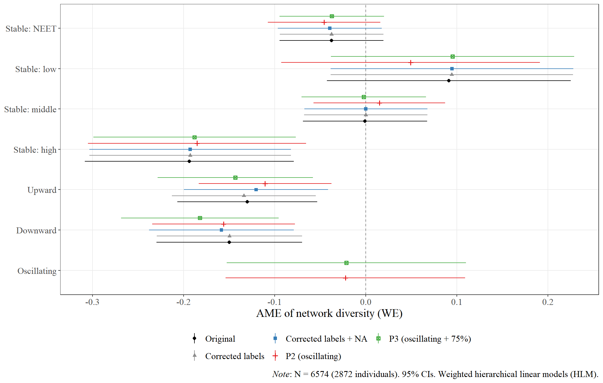
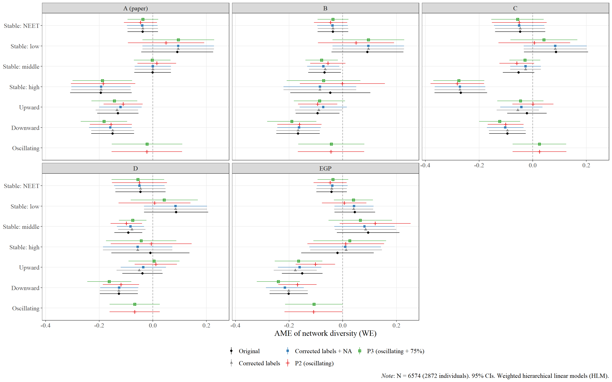

set1 <- RColorBrewer::brewer.pal(n = 8, name = "Set1")
options(ggplot2.discrete.fill = set1)
options(ggplot2.discrete.colour = set1)
ggplot2::theme_set(ggplot2::theme_bw())
ggplot2::theme_update(text = ggplot2::element_text(size = 15, family = "serif"))
options(scipen = 999)
if (!require("pacman")) install.packages("pacman")
pacman::p_load(dplyr, tidyr, lme4, ggplot2, ggtext, scales)Mobility trajectories: original, corrected, and oscillating versions (Study 2)
Setup
Purpose
This document compares the mobility trajectories of the paper with corrected and alternative versions built in prod_prep-mobility-alt.R. It does not change the paper’s pipeline.
| Version | Variable | What changes |
|---|---|---|
| Original | prof_orig_<k> |
Replication of 00-main_analysis.Rmd (identical to the stored variables) |
| Corrected labels | prof_fix_<k> |
The 75% rule also applies to Upward (L to M), (M to H), and (L to H) |
| Corrected labels + NA | prof_fixna_<k> |
Also, a missing occupation is treated as missing instead of NEET |
| P2 | prof_p2_<k> |
Sequence typology with Oscillating, single interior deviations smoothed |
| P3 | prof_p3_<k> |
P2 + corrected 75% rule |
<k> is the position variable: isco3 (alternative A, used in the paper), isco3b, isco3c, isco3d, and egp3.
Step 1. Data and analytical sample
The analytical sample is the paper’s (6,574 observations, 2,872 individuals). It is selected with the original variables, so it is the same for all versions.
if (!file.exists(here::here("input/data/proc/df1_panel_mobility_alt.RData")))
source(here::here("procesamiento/prod_prep-mobility-alt.R"))
load(here::here("input/data/proc/df1_panel_mobility_alt.RData")) # df1_alt, traj_alt
df1_alt <- as.data.frame(df1_alt)
militares <- df1_alt %>% filter(isco08_1lvl == "0000") %>% pull(id) %>% unique()
vars_paper <- c("id", "time",
"market", "just_educ", "just_salud", "just_pension",
"n_total", "isei_avg", "entropy_contacts", "know_total", "crossclass", "strong_tie",
"sex", "age", "parenteducw1", "migrationw1", "isco_father", "partner",
"isei_c", "isco03_neet",
"mobility_cat_adj_isco3", "mobility_cat_unadj", "mobility_cat_adj_isco3b",
"mobility_cat_adj_isco3c", "mobility_cat_adj_isco3d", "mobility_cat_adj_egp3", "moves",
"ponderador02", "weights1", "atricion")
an <- df1_alt %>% filter(!id %in% militares) %>% select(all_of(vars_paper)) %>% na.omit() %>% as.data.frame()
stopifnot(nrow(an) == 6574, n_distinct(an$id) == 2872)
an <- an %>% left_join(traj_alt, by = "id")
alts <- c(isco3 = "A (paper)", isco3b = "B", isco3c = "C", isco3d = "D", egp3 = "EGP")
versions <- c(orig = "Original", fix = "Corrected labels", fixna = "Corrected labels + NA",
p2 = "P2 (oscillating)", p3 = "P3 (oscillating + 75%)")
groups <- c("Stable: NEET", "Stable: low", "Stable: middle", "Stable: high", "Upward", "Downward", "Oscillating")Step 2. How many respondents change category
Persons per category
persons <- an[!duplicated(an$id), ]
counts <- bind_rows(lapply(names(alts), function(k) bind_rows(lapply(names(versions), function(v) {
x <- factor(persons[[paste0("prof_", v, "_", k)]], levels = groups)
data.frame(alternative = alts[[k]], version = versions[[v]], group = groups, n = as.numeric(table(x)))
})))) %>%
mutate(version = factor(version, levels = versions), group = factor(group, levels = groups))
counts %>% pivot_wider(names_from = version, values_from = n) %>% arrange(alternative, group)| alternative | group | Original | Corrected labels | Corrected labels + NA | P2 (oscillating) | P3 (oscillating + 75%) |
|---|---|---|---|---|---|---|
| A (paper) | Stable: NEET | 908 | 908 | 904 | 793 | 887 |
| A (paper) | Stable: low | 124 | 129 | 129 | 94 | 123 |
| A (paper) | Stable: middle | 775 | 798 | 802 | 680 | 777 |
| A (paper) | Stable: high | 315 | 329 | 331 | 287 | 323 |
| A (paper) | Upward | 401 | 359 | 354 | 394 | 280 |
| A (paper) | Downward | 349 | 349 | 352 | 431 | 289 |
| A (paper) | Oscillating | 0 | 0 | 0 | 193 | 193 |
| B | Stable: NEET | 908 | 908 | 904 | 793 | 887 |
| B | Stable: low | 124 | 129 | 129 | 94 | 123 |
| B | Stable: middle | 917 | 938 | 943 | 813 | 919 |
| B | Stable: high | 223 | 238 | 239 | 200 | 232 |
| B | Upward | 368 | 327 | 325 | 378 | 260 |
| B | Downward | 332 | 332 | 332 | 417 | 274 |
| B | Oscillating | 0 | 0 | 0 | 177 | 177 |
| C | Stable: NEET | 511 | 511 | 507 | 440 | 488 |
| C | Stable: low | 165 | 176 | 177 | 133 | 169 |
| C | Stable: middle | 966 | 1006 | 1009 | 846 | 982 |
| C | Stable: high | 372 | 390 | 392 | 342 | 382 |
| C | Upward | 424 | 355 | 350 | 380 | 276 |
| C | Downward | 434 | 434 | 437 | 502 | 346 |
| C | Oscillating | 0 | 0 | 0 | 229 | 229 |
| D | Stable: NEET | 511 | 511 | 507 | 440 | 488 |
| D | Stable: low | 165 | 176 | 177 | 133 | 169 |
| D | Stable: middle | 1138 | 1178 | 1184 | 1011 | 1159 |
| D | Stable: high | 249 | 272 | 273 | 226 | 267 |
| D | Upward | 402 | 328 | 324 | 373 | 263 |
| D | Downward | 407 | 407 | 407 | 489 | 326 |
| D | Oscillating | 0 | 0 | 0 | 200 | 200 |
| EGP | Stable: NEET | 936 | 936 | 909 | 801 | 893 |
| EGP | Stable: low | 507 | 527 | 546 | 447 | 532 |
| EGP | Stable: middle | 354 | 375 | 387 | 320 | 372 |
| EGP | Stable: high | 225 | 235 | 240 | 210 | 233 |
| EGP | Upward | 460 | 409 | 395 | 423 | 304 |
| EGP | Downward | 390 | 390 | 385 | 440 | 307 |
| EGP | Oscillating | 0 | 0 | 0 | 221 | 221 |
Respondents reclassified by the label correction
bind_rows(lapply(names(alts), function(k) {
o <- persons[[paste0("traj_orig_", k)]]; f <- persons[[paste0("traj_fix_", k)]]
fn <- persons[[paste0("traj_fixna_", k)]]
data.frame(alternative = alts[[k]],
changed_by_label_fix = sum(o != f, na.rm = TRUE),
changed_by_label_and_na_fix = sum(o != fn, na.rm = TRUE),
share_label_fix = round(mean(o != f, na.rm = TRUE), 3))
}))| alternative | changed_by_label_fix | changed_by_label_and_na_fix | share_label_fix |
|---|---|---|---|
| A (paper) | 42 | 56 | 0.015 |
| B | 41 | 52 | 0.014 |
| C | 69 | 84 | 0.024 |
| D | 74 | 88 | 0.026 |
| EGP | 51 | 119 | 0.018 |
# Detail for alternative A: original detailed category -> corrected category
with(persons[persons$traj_orig_isco3 != persons$traj_fix_isco3, ],
table(original = traj_orig_isco3, corrected = traj_fix_isco3)) corrected
original Stable: high Stable: low Stable: middle
Upward (L to H) 2 0 0
Upward (L to M) 0 5 4
Upward (M to H) 12 0 19# Sequences behind those changes
with(persons[persons$traj_orig_isco3 != persons$traj_fix_isco3, ], table(seq_isco3))seq_isco3
L-H-H-H L-L-L-M L-M-M-M M-H-H-H M-M-M-H
2 5 4 12 19 Step 3. Consequences for the main model
The paper’s interaction model (Table S4: weighted hybrid random intercept model, diversity WE × trajectory) is estimated with each alternative and each version. Stable: low is the reference in all models. The AME of diversity (WE) in each group is its within-person slope, computed as a linear combination of coefficients (delta method).
pca <- psych::pca(r = an %>% select(entropy_contacts, know_total, crossclass), nfactors = 1, rotate = "oblimin",
scores = TRUE, missing = TRUE, cor = "cor", weight = an$ponderador02)
an$diversityclass <- as.numeric(pca$scores)
an$parenteducw1 <- factor(an$parenteducw1, ordered = FALSE)
an$migrationw1 <- factor(an$migrationw1, ordered = FALSE)
an$time <- factor(car::recode(an$time, "3=2;7=3"))
an$market1 <- as.numeric(scale(an$market))
an$diversityclass_gm <- ave(an$diversityclass, an$id, FUN = mean)
an$partner_gm <- ave(an$partner, an$id, FUN = mean)
an$diversityclass_gc <- an$diversityclass - an$diversityclass_gmfit_traj <- function(var) {
d <- an[!is.na(an[[var]]), ]
d$traj <- relevel(factor(d[[var]]), ref = "Stable: low")
lmer(market1 ~ diversityclass_gc*traj + diversityclass_gm + sex + age + parenteducw1 + migrationw1 +
partner + partner_gm + time + (1|id), data = d, weights = weights1)
}
ame_lc <- function(m, w) {
b <- fixef(m); V <- as.matrix(vcov(m))
L <- setNames(rep(0, length(b)), names(b)); L[names(w)] <- unlist(w)
est <- sum(L * b); se <- sqrt(drop(t(L) %*% V %*% L))
data.frame(AME = est, SE = se, lo = est - 1.96 * se, hi = est + 1.96 * se, p = 2 * pnorm(-abs(est / se)))
}
ame_traj <- function(m) {
g <- sub("^diversityclass_gc:traj", "", grep("^diversityclass_gc:traj", names(fixef(m)), value = TRUE))
do.call(rbind, lapply(c("Stable: low", g), function(k) {
w <- list(diversityclass_gc = 1)
if (k != "Stable: low") w[[paste0("diversityclass_gc:traj", k)]] <- 1
cbind(group = k, ame_lc(m, w))
}))
}
mods <- list(); ame_all <- list()
for (k in names(alts)) for (v in names(versions)) {
m <- fit_traj(paste0("prof_", v, "_", k))
mods[[paste(k, v)]] <- m
ame_all[[paste(k, v)]] <- cbind(alternative = alts[[k]], version = versions[[v]], nobs = nobs(m), ame_traj(m))
}
ame_all <- bind_rows(ame_all) %>%
mutate(version = factor(version, levels = versions), group = factor(group, levels = rev(groups)),
alternative = factor(alternative, levels = alts))
# Check: the original version of alternative A reproduces Table S4
round(fixef(mods[["isco3 orig"]])[c("diversityclass_gc", "diversityclass_gc:trajStable: high")], 3) diversityclass_gc diversityclass_gc:trajStable: high
0.091 -0.285 AME of diversity (WE) by trajectory
stars <- function(p) ifelse(p < 0.001, "***", ifelse(p < 0.01, "**", ifelse(p < 0.05, "*", ifelse(p < 0.1, "+", ""))))
ame_all %>%
mutate(cell = paste0(sprintf("%.3f", AME), stars(p))) %>%
select(alternative, group, version, cell) %>%
pivot_wider(names_from = version, values_from = cell) %>%
arrange(alternative, desc(group))| alternative | group | Original | Corrected labels | Corrected labels + NA | P2 (oscillating) | P3 (oscillating + 75%) |
|---|---|---|---|---|---|---|
| A (paper) | Stable: NEET | -0.038 | -0.038 | -0.039 | -0.046 | -0.037 |
| A (paper) | Stable: low | 0.091 | 0.095 | 0.095 | 0.049 | 0.095 |
| A (paper) | Stable: middle | -0.001 | 0.000 | 0.000 | 0.015 | -0.002 |
| A (paper) | Stable: high | -0.194*** | -0.193*** | -0.193*** | -0.185** | -0.188*** |
| A (paper) | Upward | -0.130*** | -0.134*** | -0.120** | -0.111** | -0.143*** |
| A (paper) | Downward | -0.150*** | -0.150*** | -0.159*** | -0.156*** | -0.182*** |
| A (paper) | Oscillating | NA | NA | NA | -0.022 | -0.021 |
| B | Stable: NEET | -0.037 | -0.036 | -0.038 | -0.045 | -0.036 |
| B | Stable: low | 0.092 | 0.095 | 0.095 | 0.050 | 0.096 |
| B | Stable: middle | -0.068* | -0.066* | -0.073* | -0.056+ | -0.079* |
| B | Stable: high | -0.046 | -0.085 | -0.085 | -0.001 | -0.071 |
| B | Upward | -0.094* | -0.090* | -0.073 | -0.094* | -0.087+ |
| B | Downward | -0.167*** | -0.167*** | -0.163*** | -0.162*** | -0.190*** |
| B | Oscillating | NA | NA | NA | -0.044 | -0.043 |
| C | Stable: NEET | -0.047 | -0.047 | -0.051 | -0.050 | -0.056 |
| C | Stable: low | 0.087 | 0.084 | 0.084 | 0.006 | 0.042 |
| C | Stable: middle | -0.053+ | -0.027 | -0.027 | -0.060+ | -0.029 |
| C | Stable: high | -0.268*** | -0.271*** | -0.271*** | -0.281*** | -0.276*** |
| C | Upward | -0.021 | -0.056 | -0.042 | 0.001 | -0.046 |
| C | Downward | -0.094** | -0.095** | -0.103** | -0.101** | -0.123** |
| C | Oscillating | NA | NA | NA | 0.025 | 0.025 |
| D | Stable: NEET | -0.046 | -0.046 | -0.050 | -0.050 | -0.056 |
| D | Stable: low | 0.087 | 0.085 | 0.085 | 0.007 | 0.043 |
| D | Stable: middle | -0.091*** | -0.078** | -0.083** | -0.099*** | -0.075** |
| D | Stable: high | -0.009 | -0.057 | -0.057 | -0.006 | -0.043 |
| D | Upward | -0.039 | -0.051 | -0.035 | 0.011 | 0.004 |
| D | Downward | -0.127*** | -0.127*** | -0.125*** | -0.119*** | -0.162*** |
| D | Oscillating | NA | NA | NA | -0.068 | -0.068 |
| EGP | Stable: NEET | -0.042 | -0.041 | -0.039 | -0.047 | -0.037 |
| EGP | Stable: low | 0.045 | 0.040 | 0.042 | 0.005 | 0.040 |
| EGP | Stable: middle | 0.095 | 0.085 | 0.081 | 0.121+ | 0.065 |
| EGP | Stable: high | -0.020 | 0.012 | 0.009 | 0.011 | 0.026 |
| EGP | Upward | -0.151*** | -0.177*** | -0.161*** | -0.102** | -0.165*** |
| EGP | Downward | -0.202*** | -0.201*** | -0.216*** | -0.169*** | -0.240*** |
| EGP | Oscillating | NA | NA | NA | -0.109* | -0.107+ |
Plots
plot_ame <- function(d, ncol = NULL) {
ggplot(d, aes(x = group, y = AME, color = version, shape = version)) +
geom_hline(yintercept = 0, linetype = "dashed", color = "grey50") +
geom_pointrange(aes(ymin = lo, ymax = hi), position = position_dodge(width = 0.75), size = 0.35) +
scale_color_manual(values = c("black", "grey55", set1[2], set1[1], set1[3])) +
coord_flip() +
labs(x = NULL, y = "AME of network diversity (WE)", color = NULL, shape = NULL,
caption = "*Note*: N = 6574 (2872 individuals). 95% CIs. Weighted hierarchical linear models (HLM).") +
guides(color = guide_legend(nrow = 2), shape = guide_legend(nrow = 2)) +
theme(plot.caption = element_markdown(hjust = 1, size = 12, family = "serif"),
legend.position = "bottom", panel.grid.minor = element_blank())
}
p <- plot_ame(ame_all %>% filter(alternative == "A (paper)")); p
ggsave(plot = p, filename = "figureS_recode_isco3.png", path = here::here("output/images"),
width = 1.5, height = 1, scale = 15, device = "png", units = "cm", dpi = "retina")p <- plot_ame(ame_all) + facet_wrap(~ alternative, nrow = 2); p
ggsave(plot = p, filename = "figureS_recode_all.png", path = here::here("output/images"),
width = 2.4, height = 1.5, scale = 15, device = "png", units = "cm", dpi = "retina")